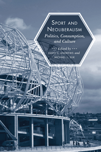

<body bgcolor="#FFFFFF" text="#000000" link="#0000FF" vlink="#CC0000" alink="#CC0000"><center><hr width="350" size="1" align="center" noshade>How neoliberal politics appropriates sports for its own ends<hr width="350" size="1" align="center" noshade><p><a href="https://cdcshoppingcart.uchicago.edu/Cart/ChicagoBook.aspx?ISBN=9781439905036&&PRESS=temple" target="_top">Buy this book!</a> | <a href="https://cdcshoppingcart.uchicago.edu/Cart/Cart.aspx?PRESS=temple" target="_top">View Cart</a> | <a href="https://cdcshoppingcart.uchicago.edu/Cart/Cart.aspx?PRESS=temple" target="_top">Check Out</a></p><p></p></center><!--none//--><h1>Sport and Neoliberalism</h1>
<H2>Politics, Consumption, and Culture</H2>
<h3>edited by David L. Andrews and Michael L. Silk</h3>
<P>cloth 1-4399-0503-7 $90.50, Jul 12, <FONT COLOR=#990033>Available</FONT>
<br>paper 1-4399-0504-5 $38.95, Jul 12, <FONT COLOR=#990033>Available</FONT>
<br>Electronic Book 1-4399-0505-3 $38.95 <FONT COLOR=#990033>Available</FONT>
<BR> 322 pp
6x9
</P><BLOCKQUOTE><I>"</I>Sport and Neoliberalism<I> is a sophisticated collection of well-reasoned essays that collectively provide a landmark statement on neoliberalism as a dominant political, social, and economic organizing mechanism. The multidisciplinary nature and range of topics covered are impressive, as is the way that the editors have thematically organized the contributions. Scholars who are interested in any aspect of the political and economic governance of sport will find </I>Sport and Neoliberalism<I> a 'must read,' as will policy makers keen to understand more about the potential consequences of strategies of economic maximization and social control."</I> <br>&#151<b>John Amis</b>, Department of Management, University of Memphis</I></BLOCKQUOTE>
<P>Offering new approaches to thinking about sports and political ideologies, <i>Sport and Neoliberalism</i> explores the structures, formations, and mechanics of neoliberalism. The editors and contributors to this original and timely volume examine the intersection of sport as a national pastime and also an engine for urban policy&#8212;e.g., stadium building&#8212;as well as a powerful force for influencing our understanding of the relationship between culture, politics, and identity.
<P><i>Sport and Neoliberalism</i> examines the ways the neoliberal project creates priorities for civic society and how, in effect, it turns many aspects of sport into a vehicle of public governance. From the relationship between sport and the neo-liberal state, through the environmental dimensions of neo-liberal sport, to the political biopolitics of obesity, the essays in this volume explore the ways in which the "logics" of neoliberalism are manifest as powerful public pedagogies through the realm of popular culture.
<p>Contributors include: <i>Michael Atkinson, Ted Butryn, C. L. Cole, Norman Denzin, Grant Farred, Jessica Francombe, Caroline Fusco, Michael D. Giardina, Mick Green, Leslie Heywood, Samantha King, Lisa McDermott, Mary G. McDonald, Toby Miller, Mark Montgomery, Joshua I. Newman, Jay Scherer, Kimberly S. Schimmel</I>, and <i>Brian Wilson</i>
<BR>&nbsp;<h2>Excerpt</h2><P>Excerpt available at <a href="http://www.temple.edu/tempress">www.temple.edu/tempress</a></p>
<BR>&nbsp;<h2>Reviews</h2>
<p><i>"[A]n extensive collection of essays that provide a look at sport from political, social, and economic points of view (with a neoliberal slant).... [T]his book attempts to redefine how sport is viewed, discussed, and understood. It will be particularly useful to those interested in the intersection of politics, economics, and sport. Summing Up: Recommended." </i><br>&#151<b><i>Choice</i></b>
<p><i>"For those interested in a critical analysis of sport, this collection has merit. Many of the articles are well written and carefully analyze the intricate relationship between neoliberalism and sport."</i><br>&#151<b> <i>Contemporary Sociology</i></b>
<p><i>"</i>Sport and Neoliberalism<i> provides an ideal opportunity to consider and assess [neoliberalism's] relevance to the functioning and performance of contemporary sport.... One area in which the editors excelled is [the] inclusion of a wide variety of sport issues and sport settings.... This addition to sport literature is insightful and invaluable and serves as a strong call to action for sport management researchers."</i><br>&#151<b> <i>idrottsforum.org</i></b>
<BR>&nbsp;<h2>Contents</h2><P>
<p>1. Sport and the Neoliberal Conjuncture: Complicating the Consensus &bull; Michael L. Silk and David L. Andrews</p>
<p><b>Part I: Structures, Formations, and Mechanics of Neoliberalism</b>
<br>2. A Distorted Playing Field: Neoliberalism and Sport through the Lens of Economic Citizenship &bull; Toby Miller
<br>3. Advanced Liberal Government, Sport Policy, and �Building
the Active Citizen� &bull; Mick Green
<br>4. Race, Class, and Politics in Post-Katrina America &bull; Michael D. Giardina and C. L. Cole
<br>5. Nike U: Full-Program Athletics Contracts and the Corporate University &bull; Samantha King
<br>6. Growth and Nature: Reflections on Sport, Carbon Neutrality, and Ecological Modernization &bull; Brian Wilson
<br>7. The Uncanny of Olympic Time: Michael Phelps and the End of
Neoliberalism &bull; Grant Farred</p>
<p><b>Part II: Government, Governance, and the Cultural Geographies of Neoliberalism</b>
<br>8. The Governance of the Neoliberal Sporting City &bull; Michael L. Silk and David L. Andrews
<br>9. Governing Play: Moral Geographies, Healthification, and Neoliberal Urban Imaginaries &bull; Caroline Fusco
<br>10. Neoliberal Redevelopment, Sport Infrastructure, and the Militarization of U.S. Urban Terrain &bull; Kimberly S. Schimmel
<br>11. Economies of Surf: Evolution, Territorialism, and the Erosion
of Localism &bull; Leslie Heywood and Mark Montgomery
<br>12. Free Running: Post-sport Liminality in a Neoliberal World &bull; Michael Atkinson
<p><b>Part III: Consuming Pleasure: Citizenship, Subjectivities, and �Popular� Sporting Pedagogies</b>
<br>13. Out-of-Bounds Plays: The Women�s National Basketball Association and the Neoliberal Imaginings of Sexuality &bull; Mary G. McDonald
<br>14. Pedagogies of Fat: The Social Currency of Slenderness &bull; Jessica M. Francombe and Michael L. Silk
<br>15. Technologies of the South: Sport, Subjectivity, and �Swinging�
Capital &bull; Joshua I. Newman
<br>16. Hijacking Canadian Identity: Stephen Harper, Hockey, and the Terror of Neoliberalism &bull; Jay Scherer and Lisa McDermott
<br>17. Global Smackdown: Vince McMahon, World Wrestling Entertainment, and Neoliberalism &bull; Ted Butryn</p>
<p>Afterword: Sport and Neoliberalism &bull; Norman K. Denzin
<br>Contributors
<br>Index</p>
</P><BR>&nbsp;<H2>About the Author(s)</H2>
<P><b>David L. Andrews</b> is a Professor in the Physical Cultural Studies program, Department of Kinesiology, at the University of Maryland, College Park</P>
<P><b>Michael L. Silk</b> is a Reader in the Faculty of Humanities and Social Science at the University of Bath.</P>
<BR><H2>Subject Categories</H2>
<p><A HREF="/tempress/sports.html" TARGET="_top">Sports</a>
<BR><A HREF="/tempress/sociology.html" TARGET="_top">Sociology</a>
<BR><A HREF="/tempress/political.html" TARGET="_top">Political Science and Public Policy</a>
</p>
<BR><h2 class="inpageheading">In the series</H2>
<P><I><a href="http://www.temple.edu/tempress/sporting.html" onMouseOver="window.status='Click for other books in this series!'; return true;" onMouseOut="window.status=''; return true;" target="_top">Sporting</a></i>, edited by Amy Bass.
</p><p>As an international cultural activity for athleticism, spectatorship, and global cultural exchange, sport is unmatched by any other force on earth. And yet it remains a consistently understudied dimension of history and cultural studies. <i>Sporting</i>, edited by Amy Bass, aims to contribute to the study of sport by publishing works by people across a range of disciplines, by professional sportswriters, and by athletes to add substance to our still emerging notion of globalization.</p>
<p align="center"><a href="https://cdcshoppingcart.uchicago.edu/Cart/ChicagoBook.aspx?ISBN=9781439905036&&PRESS=temple" target="_top">Buy this book!</a> | <a href="https://cdcshoppingcart.uchicago.edu/Cart/Cart.aspx?PRESS=temple" target="_top">View Cart</a> | <a href="https://cdcshoppingcart.uchicago.edu/Cart/Cart.aspx?PRESS=temple" target="_top">Check Out</a></p><p><font face="Arial" size="1"><a href="copyright.html" onMouseOver="window.status='Web Copyright Policy';return true;" onMouseOut="window.status=''" title="Web Copyright Policy">&copy;</a> 2016 <a href="http://www.temple.edu" target="new" onMouseOver="window.status='Link to Temple University home page';return true;" onMouseOut="window.status=''" title="Link to Temple University home page">Temple University</a>. All Rights Reserved. http://www.temple.edu/tempress/titles/2131_reg.html</font></p>